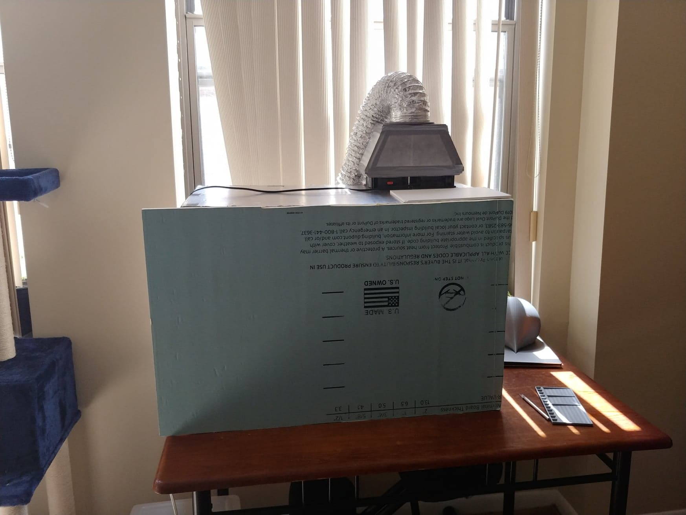
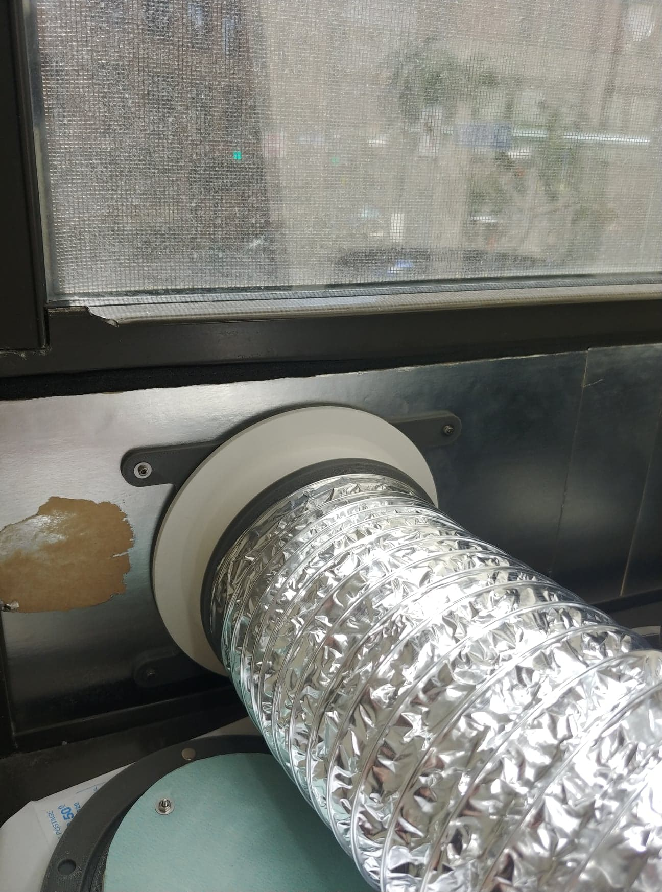
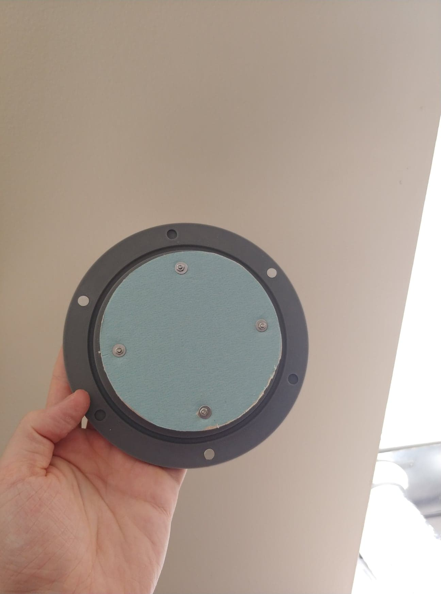
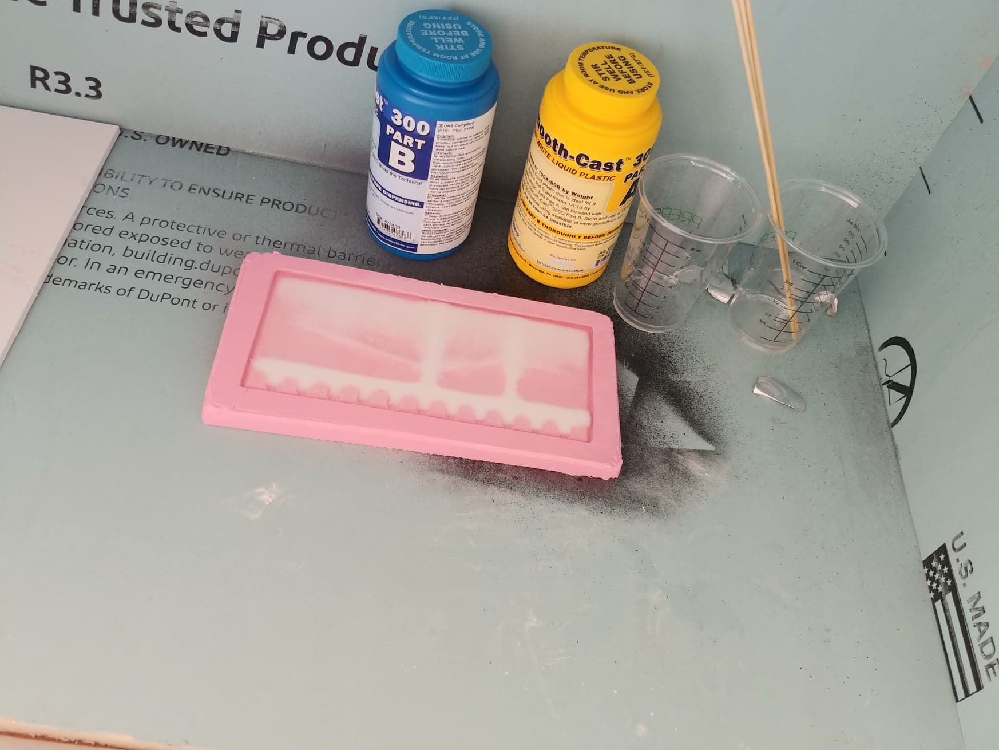
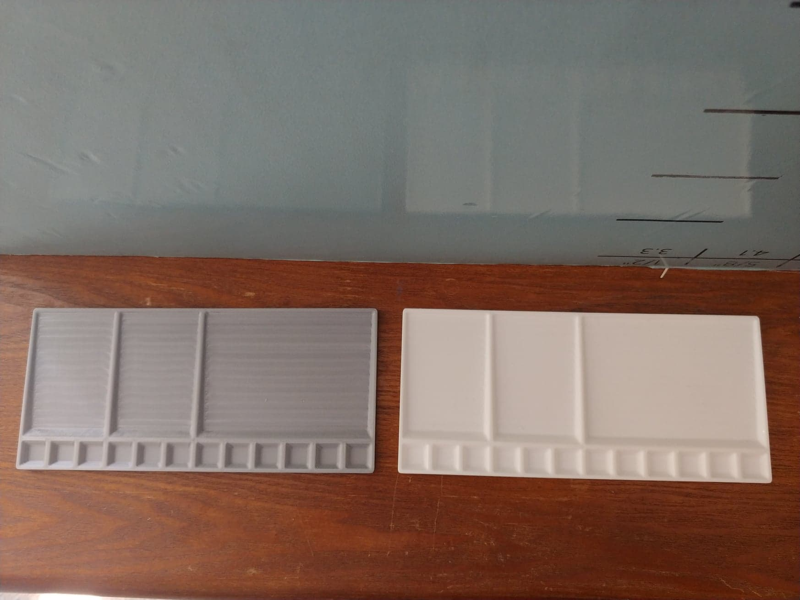
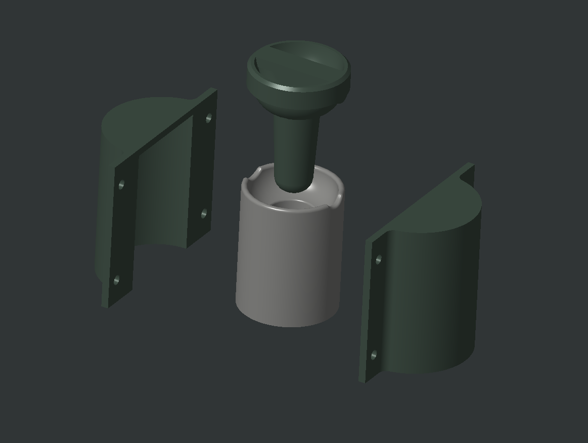
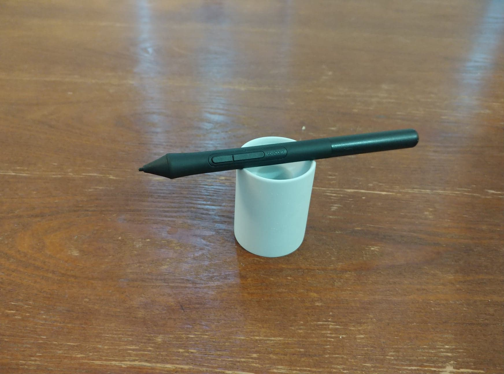
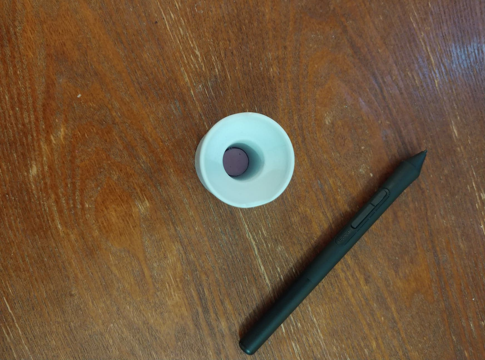
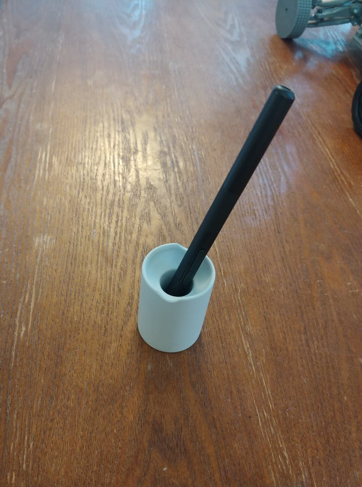

I love 3D printing, but it has its drawbacks.
For example, a few years ago I designed a phone mount for my car and printed it in PLA. One sunny day was all it took to melt it beyond recognition. I also still don't have a reliable way to run FEA on a 3D printed part: every printer prints differently, and don't get me started on infill. For these reasons and many more, I had been interested in casting parts from hard plastic or resin for a while, and I finally decided it was time to give it a shot.

It may have been the right time to try casting, but I live in an apartment, so finding the right place took some work. The only logical solution was to build a fume hood.

The fume hood itself was easy to build; I just needed a strong, cheap material for the box. The real challenge was getting the fumes out the window without them blowing back in. My solution was to cut a hole in a sheet of insulation, mount a 3D printed porthole in it, and wedge it under the window. Weatherstripping seals the gaps, so I can leave it in place permanently. The remaining 7 x 4 ft of insulation also answered the question of what to build the rest of the fume hood from.

Because I embedded magnets in the prints, swapping the duct and plug is extremely easy. I also gave the 3D printed port and plug a tongue-and-groove interface, which resists lateral movement and stops air from leaking where I don't want it.

With the fume hood sorted, it was time to start casting! My first project was a paint palette. It was small and easy to model, which made it an excellent first project. I 3D printed the master, sanded it for what felt like an hour, and covered it in silicone. The next day, I removed the master and poured in the resin. It went from clear to completely opaque in about 10 minutes, which blew my mind.

Unfortunately, the palette doesn't work. Paint sticks to it, which I believe is because I didn't sand the master smooth enough. After a quick Amazon purchase, I no longer needed to make a palette. Overall, I was pleased with this first test: the molds worked, and I didn't pass out from the fumes. However, the silicone was the most expensive part of the process, and I wanted to get something useful out of the experiment, so I came up with another project.

Silicone is the recommended mold material for casting resin, but I have a lot of PLA, and nobody explicitly told me not to 3D print a mold. I did look into it: silicone is recommended mainly for its flexibility. Since I know how to design for casting, I gave it a shot and made a three-part mold for a stylus holder.

I have to say, apart from the mold melting, it worked better than I expected. I knew urethane cures through an exothermic reaction, but I didn't expect it to get hot enough to melt the mold. Fortunately, the part came out fine, but I definitely can't use 3D printed molds to mass-produce stylus holders.
Darn.

I had a little silicone left over, so I poured it into the bottom to keep my pens from getting damaged when I drop them in. I still have to be careful, though: drop one too hard and it bounces right out.

All things considered, I am very happy with how it turned out and can't wait to cast more of my projects!
Special thanks to An for not asking too many questions when the fume hood took over the dining table and we had to eat at our desks.